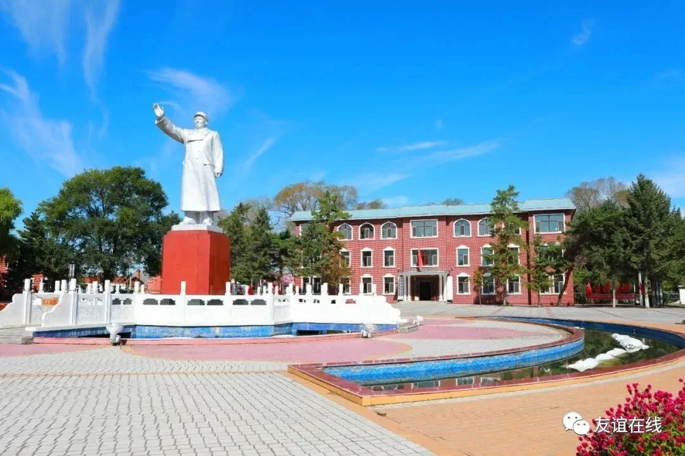
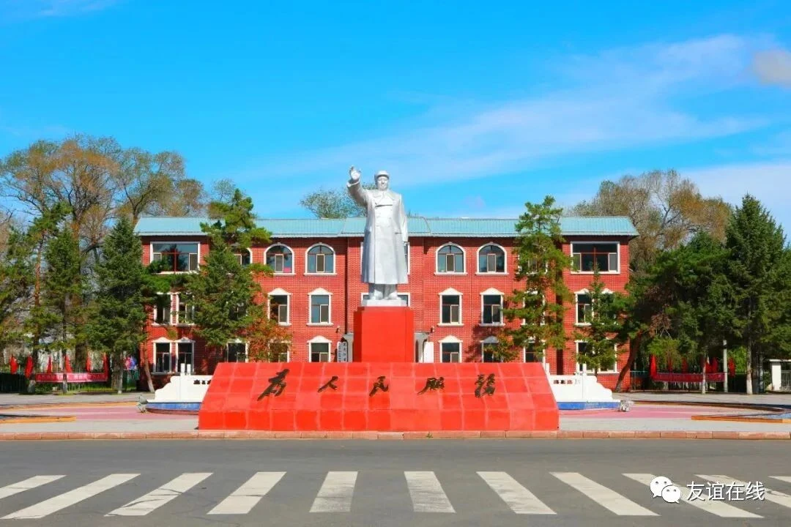
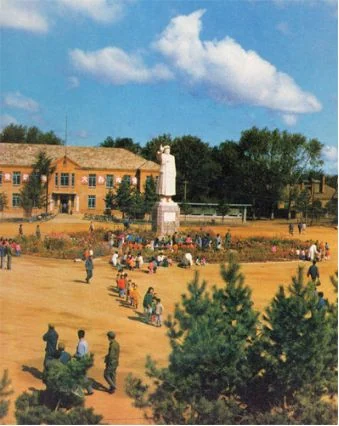
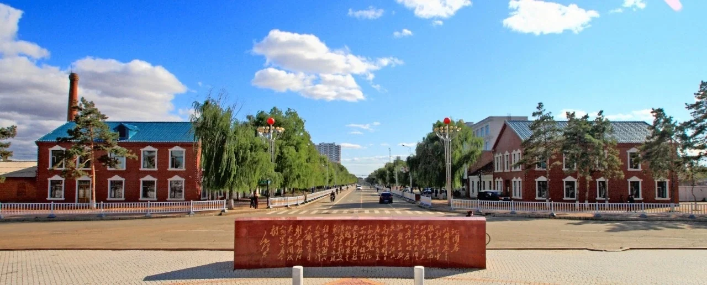

景点介绍
1954年筹建友谊农场时，中苏工程技术人员一同参与场部规划。随后，这里陆续建起办公室、专家住处、职工宿舍和俱乐部。俄式八角楼曾供苏联专家居住和办公。
场部广场立有毛泽东塑像。1954年12月21日，友谊农场在选定的总场场址举行建场升旗仪式，首任场长王操犁到场。
今天的场部广场


场部广场旧影

友谊镇 · 场部旧迹
俄式八角楼与毛主席像都在友谊镇的农场老场部一带。红砖建筑和广场见证了总场部的建设与变迁。

1954年筹建友谊农场时，中苏工程技术人员一同参与场部规划。随后，这里陆续建起办公室、专家住处、职工宿舍和俱乐部。俄式八角楼曾供苏联专家居住和办公。
场部广场立有毛泽东塑像。1954年12月21日，友谊农场在选定的总场场址举行建场升旗仪式，首任场长王操犁到场。


